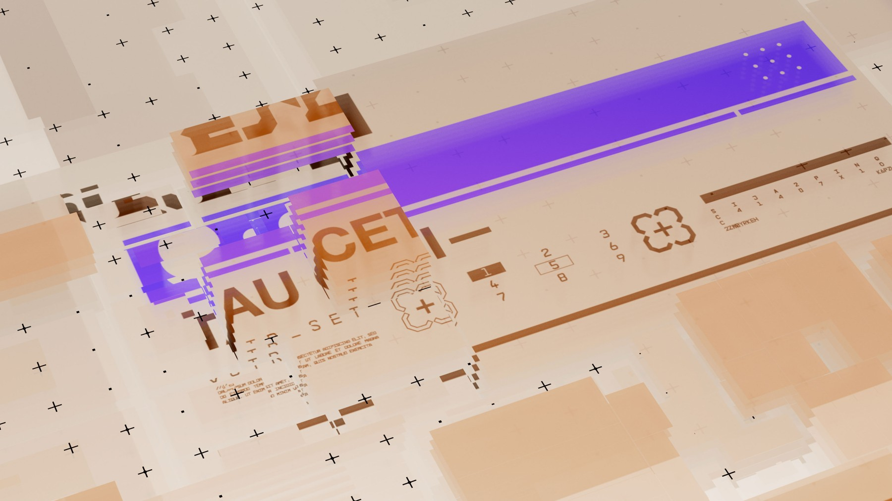
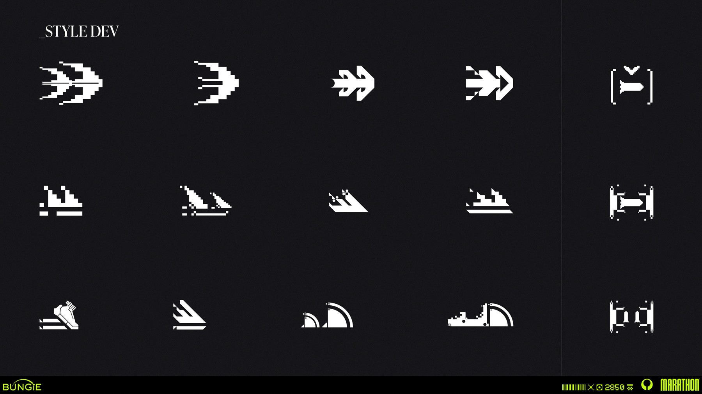
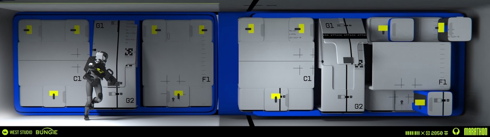
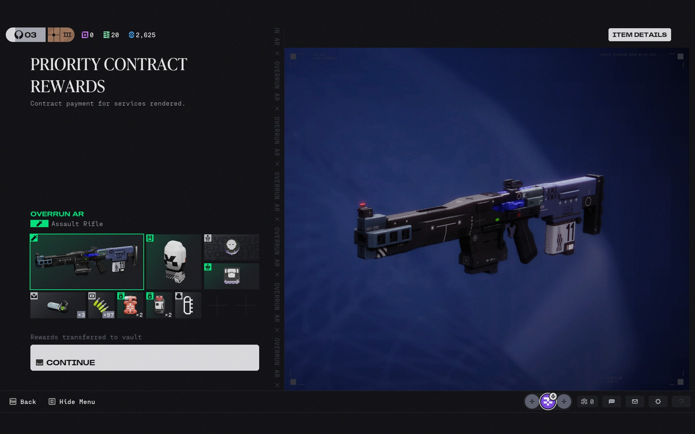
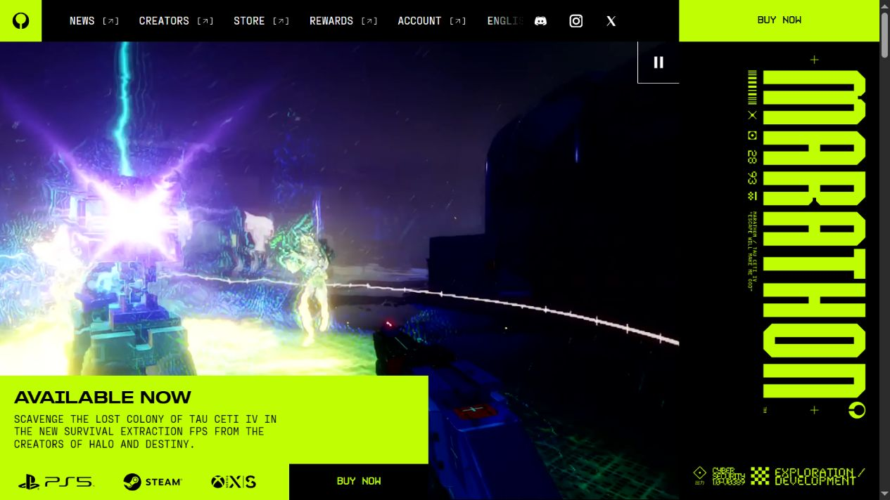
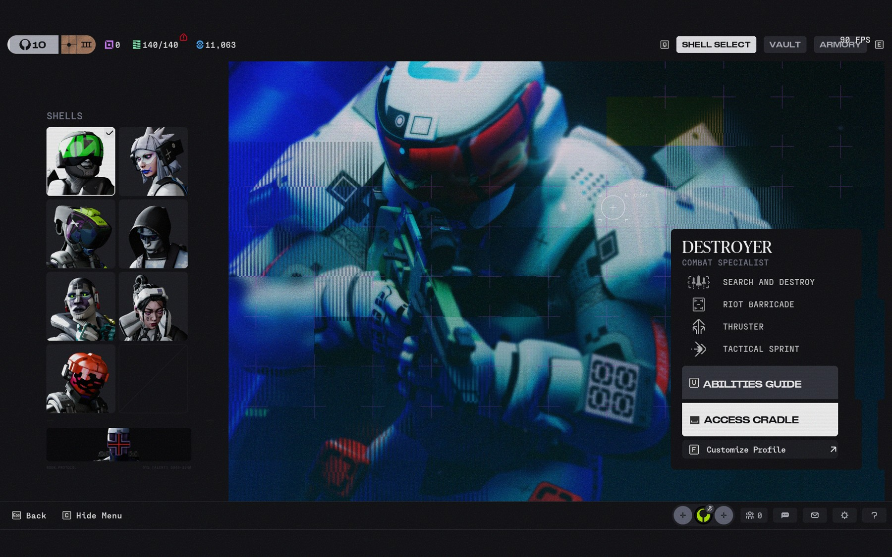
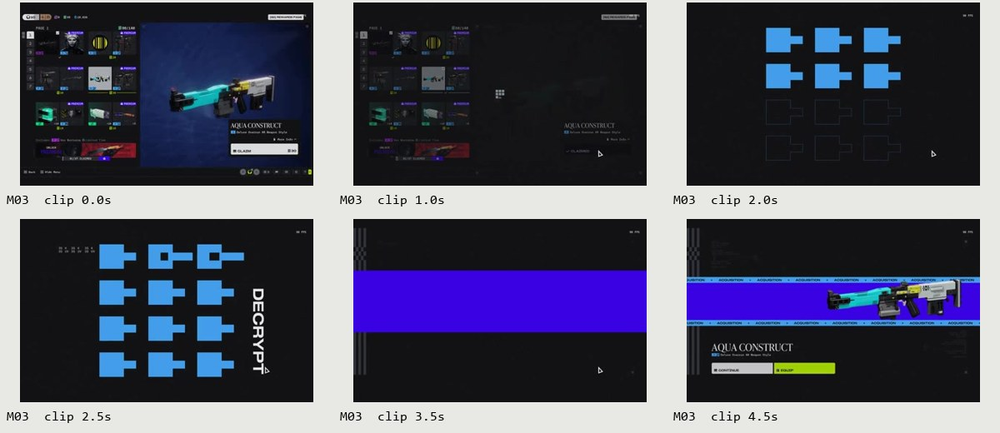
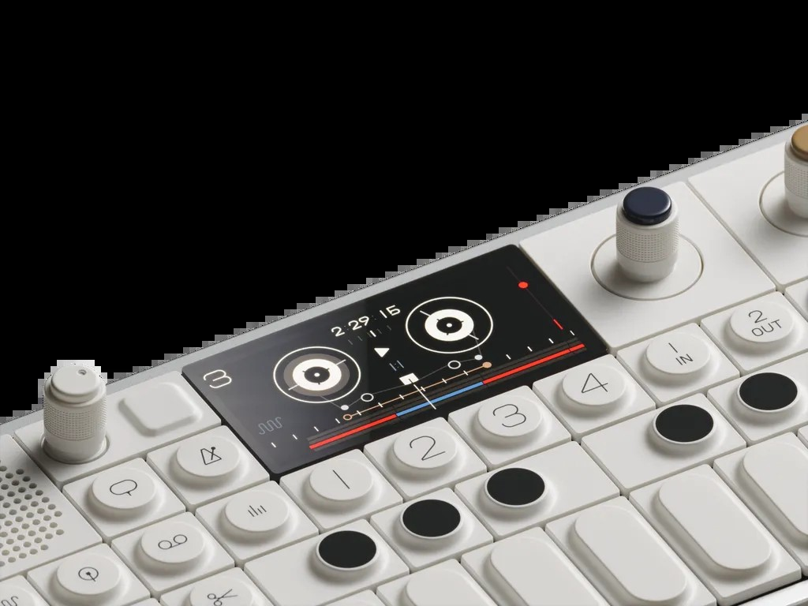
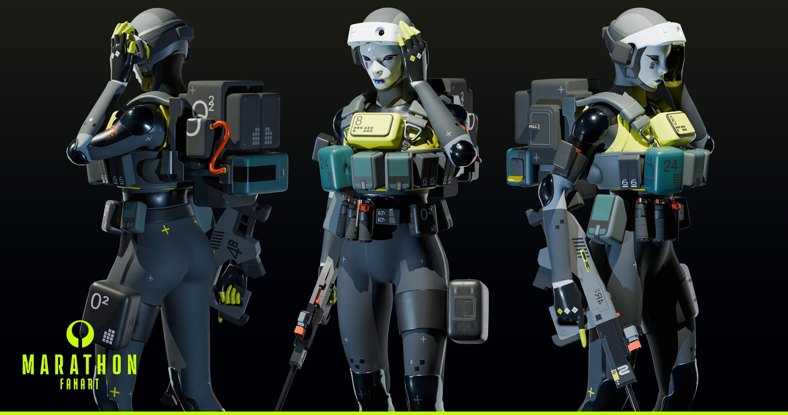

可信的比例、清楚的模块和有意义的标记，让强烈风格可以被理解。
MARATHON → UI STUDIO / 2026.11.07图形、秩序
图形、秩序
与状态。
从《失落星船：马拉松》的视觉世界，走向一个可以长期使用的创作工作室。
研究与试点阶段 · 全面设计待用户明确批准



01 / RESEARCH
先理解规则，再选择表达。
展示、操作、数据分别承担职责，中文在自己的字阶中成立。
主动作与品牌锚点获得强调，图片和密集信息拥有稳定背景。
动作触发明确变化，过程有解释，结果落在稳定终态。
完整研究报告 · 含图文与证据边界
Marathon：从图形写实主义到工作室界面
研究日期：2026-11-07。范围为公开可取得的官方站点、制作方资料、实机归档、影片、分析、二创与跨领域参考。当前成果包含研究、设计体系建议与试点；全面设计尚未获批。
可浏览版本：研究图册 · 交互试点 · 来源索引 · 24 个案例的结构化记录。
1. 核心判断
适合本项目的转译方向是：有功能依据的几何结构、清楚的字阶反差、集中使用的高饱和色，以及能够解释状态的短动效。图像创作和管理任务需要持续阅读，作品本身又需要准确的观看环境，所以风格应分配到不同区域，而不是平均覆盖每个像素。
“Graphic Realism”首先描述一种造型与表现策略。2023 年 Joseph Cross 的论述，经 Creative Bloq 引述，分别强调简化／解构的设计语言、强烈图形与色彩、有限材质，以及可信的比例、尺度、功能暗示和世界。2026 年 Art Blast 中，Brian Vinton 与 Jason Sussman 又将产品设计的可信度、图形设计的鲜明度和 Marathon 的陌生感并列，并明确提到负空间、色彩节制、材料关系与隐含功能。[S04、S12]
这使研究的重点超出了“科幻、荧光绿、故障效果”几个标签：同一视觉体系可以同时容纳白色工业外壳、低彩度控制面板、极高饱和图形、自然植被、合成身体和磨损。它的统一性来自形体、信息与功能之间的关系。
West Studio 的环境概念设计：浅色体块、蓝色结构、局部黄色和人物尺度共同说明系统关系。来源 S15；不是官方 UI 尺寸规范。
2. 将四种视觉场景分开理解
| 场景 | 首要目标 | 观察到的手法 | 适配到工作室 |
|---|---|---|---|
| 官网、海报与品牌传播 | 在短时间建立身份与兴趣 | 强色块、大字、极端尺度差、边缘微排版、影像 | 侧栏身份区、空状态、局部主标题、主操作 |
| 游戏中的可操作 UI | 选择、比较、确认与反馈 | 选择列表、物品网格、预览区、信息面板、主动作 | 图库、批量归类、图片详情、模型与参数区域 |
| 片中虚构屏幕 | 叙事、机器感、系统状态 | 失真、编码、扫描、层叠色块、不稳定的可读性 | 少量短暂装饰与状态转换；操作文字保持稳定 |
| 场景、角色与 CG | 建立可信又陌生的世界 | 简化大体块、材料对比、工业标记、真实光照与尺度 | 组件轮廓和插图方向；不把电影光照当作控件色值 |
Michael Rigley 在自己的制作说明中明确区分了片中界面与场景贴花，并指出信号中断、压缩、噪声和不稳定信息属于叙事的一部分。该资料对应 2023 公告片，不能自动成为当前游戏的交互规范。[S41]
网格、坐标与块状结构带来身份；信息失真在这个场景中具有叙事理由。工作室的提示词、费用、状态和错误原因承担的是直接操作职责。
3. 字体：先定义角色，再选择字库
字体证据来自两个层次：当前官网实际渲染的 CSS 声明，以及 Fonts In Use 对 2026 游戏截图的整理。后者是社区归档，作者判断与官方声明分别记录。
| 字体／声明 | 已核实到的证据 | 可借鉴的特征 | 项目处理 |
|---|---|---|---|
| KH Interference | 官网购买按钮声明 khInterference；Fonts In Use 的实机归档；KH Type 官方说明 |
大写等宽展示字、45° 网格、外角圆／内角直、紧密的行距、符号系统 | 适合短展示字和标识；没有中文支持证据，不承担长正文 |
| 定制 Shapiro | 官网标题声明 marathonShapiro；归档描述为修改过的 Shapiro Wide 65 |
宽体、较大的视觉面积与直接标题节奏 | 用于研究字阶和密度；样张采用本机字体替代，未复制商业字体文件 |
| Fraktion Mono | 官网导航／部分标签声明 ppFraktionMono；实机归档记录 Regular／Medium |
数据感、固定字宽、数字与编码的节奏 | 只把这种角色分配给编号、参数、状态辅助信息 |
| IvyPresto Headline | Fonts In Use 对实机标题的辨认 | 编辑式、较柔和的衬线气质，与工业图形形成反差 | 可以影响少量展示文字；普通操作标签仍保持统一 |
KH Type 官方说明提供了尤其有用的结构依据：Interference 的几何不是简单的“所有角都切掉”，其外部圆角与内部直角并存，另有支持紧行距的重音字形替换。这说明风格来自一组相互协调的规则。[S20]

中文需要独立成立。推荐把字阶分成展示、操作、数据三个角色：中文正文与按钮使用可靠的无衬线字体；数字／编号使用等宽或等宽数字；衬线仅用于少量展示文字。思源黑体／思源宋体及 Space Grotesk／Space Mono 是可进一步测试的开源候选，有各自的源仓库与许可说明，但都不等同于游戏原字库。[S40、S42–S44]
本轮 FigCraft 与浏览器试点使用 Microsoft YaHei UI、Arial、Consolas、Georgia，便于在当前环境中保持可编辑与一致显示。这些是明确标记的试点替代字体；正式字体决策还需要双语样张、许可和部署体积的验证。
4. 颜色：品牌信号与语义颜色分别管理
当前官网 BUY NOW 按钮的实际背景为 RGB(192,254,4)，即 #C0FE04，搭配黑色文字。这一值有浏览器样式读取依据。其他概念图和电影画面的颜色受到材质、光照和视频压缩影响，只作为色彩关系参考。[S01]

工作室建议建立三层颜色：
- 基础面：背景、表面、浮层、侧栏和图片舞台，保证阅读与看图。
- 品牌强调：酸绿色及有限的次级颜色，服务主动作、选择和品牌锚点。
- 业务语义：成功、警告、错误、禁用和键盘焦点，具有稳定含义，并配合文字或形状。
试点浅色主题采用灰白／灰绿基底，深色主题采用低彩度近黑基底。浅色下的小字号强调文字使用更深的绿色，亮绿用于填充并配深色文字；深色下亮绿可用于小面积标记。两套主题共享变量名，但分别选择背景层级、边界、遮罩和文字值。具体值与对比检查见 基础规范 和 tokens.json。
官方材料中的高彩度蓝、紫、洋红、青绿与橙色值得保留为探索空间，但本项目的“错误”“处理中”“选中”不应随着视觉主题随意换义。对图片展示区，强色边框和持续闪动尤其需要克制，因为会影响对作品明暗、色相和细节的判断。
5. 布局、形态与图标
官网与传播图采用大尺度差：主标题与主体图像决定首要阅读，小号编码被安排到边缘或局部区域。可操作 UI 则经常把列表、主体预览、说明和动作分开。两种方式都依靠层级，而不是依靠每个元素同样显眼。[S01、S02、S11]

工作室的布局原则是：创作区围绕“输入—参数—费用—发送—结果”组织，图库围绕“浏览—选择—归类—预览”组织。侧栏说明当前位置，弹窗聚焦一个决定，表格帮助比较记录。所有视觉手法都需要服从这条任务顺序。
形态上同时保留直线、小圆角、有限切角与模块化组合。试点比较了 8px、0px、3px 三种圆角表达；这些数值是工作室建议，不是官方参数。控件与内容容器可使用不同的边界强度，不能仅为装饰在每个角上增加十字、编码或边框。
Ryan Klaverweide 的图标资料提供了比单张最终图更有用的证据：同一含义的轮廓迭代、线与块的比例、以及可以复用的基本图形。工作室需要自己的下载、添加、文件夹、选择、关闭等符号，首先在 16／20／24px 中辨认清楚，再考虑风格细节。[S13]
6. 动效：区分反馈、空间变化与叙事
本轮保留 12 组短片与连续帧，覆盖实机 UI、Antibody 公开短预览、Michael Rigley 的网页循环及官方 CG 的选定片段。每组标记来源、采样位置和范围。公开短预览不充当完整影片观看记录；连续帧的采样间隔也不是原控件的交互时长。

最值得转译的是“变化有明确起点与稳定终点”。实机奖励展示可以经过块阵、文字、色带再落到结果；但频繁生图操作需要更短、局部的反馈。建议把动效分成：按钮即时反馈、组件状态变化、弹窗／抽屉的空间进入，以及少量品牌表达。[S11、S38]
本轮产品建议采用 120／180／240／320ms 四档，位移主要为 1／4／8px，缓动暂定 cubic-bezier(0.2,0,0,1)。这些是试点参数，未声称从游戏测得。生成中使用无百分比的状态指示，成功结果及时呈现，部分失败保留成功图；失败与中断仍由现有业务规则决定，不增加自动重试。
减少动态效果时保留状态文字、焦点和操作结果，去掉位移与循环运动。错误信息不会用乱码或故障闪烁表达。详细触发、打断和降级规则见 动效规范。
7. 扩展参考与二创如何进入体系
| 参考 | 可以借鉴 | 在本研究中的证据边界 |
|---|---|---|
| The Designers Republic / WipEout | 主身份、虚构子品牌、图标与版式的系统关系 | Cross 的影响论述经 S04 转述；项目作者归属在 S31 核对。视频 S08 的图像属于二级比较材料 |
| teenage engineering / OP–1 field | 有色编码、稳定位置、硬件控制与显示区的分工 | 第一方产品资料与照片；作为本研究比较对象，不宣称该具体产品是官方影响源 |
| Nike Podium / Kurppa Hosk | 共享基础变量支撑多种表达，字体／颜色／动效协同 | 第一方案例说明，不借用 Nike 专有资产和具体数值 |
| Dieter Rams / Vitsœ | 结构解释用途、诚实反馈、日常使用的持久性 | 原则及产品图来自第一方资料；用于约束操作成本，同时保留风格表达 |
| Rémy Mallard 的 Marathon 二创 | 塑料感、几何比例、有限鲜色、工业标记如何共同维持身份 | 作者明确标为 fan art；不冒充官方资产 |
| 科幻影像、赛车、音乐和平面设计 | 尺度、材料、身体与机器、编号和视觉节奏 | 由制作论述和分析视频提供线索；具体影响关系需要独立证据，不能仅凭相似外观认定 |


跨领域研究最有价值的结果，是让规则能够处理新的组件。一个只会复用海报或游戏符号的方案，很难设计管理表格、价格冲突、长中文输入或滑动条；结构、层级、语义颜色和状态规则则能够继续工作。
8. 三种试点方向与建议
| 方向 | 主要表达 | 适用性与代价 |
|---|---|---|
| A / FIELD · 理性工业 | 较柔和的模块轮廓、清楚的工程式排版、小面积强调 | 阅读稳定、适配成本较低；品牌性相对含蓄 |
| B / SIGNAL · 强烈图形 | 明亮标题色块、方形边界、大字与明显标记 | 辨识度强；需要限制高饱和区域面积，检查长时间使用 |
| C / STUDIO · 混合表达 | 技术信息与少量衬线展示形成反差，主动作和导航承担强调 | 更适合创作工作室的内容密度；仍需在正式字库和组件细节中加强个性 |
建议以 C 作为工作界面的起点，保留 B 作为更强烈的候选，待实际试用和用户审阅后决定。这个建议依据目前的中文内容、双主题与操作验证，不是用户偏好研究或 A/B 实验结果。
试点提供相同内容的三方向双主题创作画面、双主题图库多选、组件状态板和窄屏画面。浏览器演示支持主题／方向切换、弹窗、名称检查、六附件上限、图片预览、图库多选、滑动条、生成状态与减少动态效果。它使用本地示例数据，不代表已接入正式业务。
9. 范围、缺口与下一步决定
本轮来源记录保留受限项及未深读项，不能把记录条数等同于全部已读来源。Bilibili 的一个中文分析视频被 412 风控拒绝，另一条只作为候选；Creative Review、部分 Behance 与 Tau Ceti World 未取得正文。可用的一手资料与英文解析支撑本轮主要判断。来源 S28／S29 仅确认官网更新入口，不能证明本研究实机画面覆盖最新补丁。
现有实机归档主要为 2026 Season 2，2023 与 2025 宣传／概念资料按年代分别标识。字体完整授权、真实用户长时疲劳测试、跨平台字体回退、全部页面与完整移动端设计，仍属于后续工作。
进入全面设计前，需由用户明确批准方向与范围。建议顺序是：基础变量与字体定稿 → 创作与图库 → 弹窗与表单 → 设置和管理 → 状态与窄屏覆盖 → 前端同步验证。现有模型能力、六附件次序、图片处理、计费、失败处理与数据归属继续沿用项目协议。
02 / CASE STUDIES
24 个案例，逐项转译。
每个案例区分观察、规则、项目用途与采用边界。
03 / VISUAL ARCHIVE
可放大、可追溯的参考图。
包含原作者图、实机归档、网页截图和选定视频帧；点击查看完整画面与来源。
04 / MOTION
让变化有起点，也有终点。
12 组短片与连续帧。播放器时间为本地片段，影片位置和素材范围另列；产品建议参数单独说明。
动效转译规则与参数建议
动效规范建议 v0.1
参考片段与连续帧见 motion-index.json 和图册动效区。下表的毫秒数为本项目试点参数，不是游戏原生时长的测量值。
| 类别 | 建议参数 | 触发与终态 | 减少动态效果 |
|---|---|---|---|
| 按钮反馈 | 120ms；按下位移 1px | hover／press 立即响应，松开回到稳定状态 | 保留颜色／边界变化，取消位移 |
| 选择、附件加入、Toast | 180ms；位移 0–6px | 用户操作后出现，数量与选中态同步 | 直接呈现新状态 |
| 对话框／抽屉 | 240ms；位移约 8px；遮罩先建立 | 打开时将焦点交给内容，关闭后恢复触发入口 | 不移动面板，立即显示和恢复焦点 |
| 结果出现 | 320ms；位移约 4px与透明度变化 | 真实结果可用时显示；多张结果逐张完成 | 结果立即可用 |
| 未知进度 | 约 1.2s 的低幅度局部循环 + 持续文字 | 有真实 processing 状态才循环，终态即停止 | 静态图形 + “正在生成”等文字 |
| 品牌短表达 | 限定场景、限定区域，需单独验证 | 入场或主动触发，结束后保持安静 | 使用静态终帧 |
通用缓动暂定 cubic-bezier(0.2,0,0,1)。高频控制不加入可感知的起始等待；更长动效期间仍需保持操作和状态可理解。宽度、颜色与阴影的变化避免造成周围布局跳动。
从参考到产品
- M01 阵营界面：主体背景发生运动，文字面板维持位置。可借鉴层级分工；长期创作页面不需要常驻运动背景。
- M02 Codex：滚动文字带、扫描纹理与静态正文并置。可用于少量装饰，不用于长提示词或关键记录。
- M03 奖励获取：选择后经历块阵、解码、色带和稳定结果。工作室只抽取“清楚转换后落到稳定结果”的原则，缩短到局部反馈。
- M04／M05 Antibody 短预览：颜色与图形编码强化叙事变化。适合研究视觉节奏，不作为错误信息闪烁的理由。
- M06／M07 公告片公开短预览：镜头移动与剪辑引导注意力。常规控件通过更小的位移表达位置关系。
- M08–M11 官方 CG：视觉标记依附于场景、身体和设备。产品装饰也应依附真实的功能区域。
- M12 片尾：文字可以被组织为图形块。日常操作所需文字仍应按阅读方向稳定排列。
状态与打断
操作反馈、加载状态和任务事实分开。未知等待时间使用不确定进度；已完成的图片立即出现。部分失败同时提供成功结果与失败说明。取消或离开视图停止无意义的视觉循环；失败不会自动触发新的生成调用。
连续触发采用当前状态作为起点，避免叠加多个入场动画或重复触发 Toast 定时器。原型中“发送”的等待与结果是明确标记的本地演示，真实项目须由服务端状态驱动。减少动态设置与系统偏好都应生效，且保留键盘焦点、错误原因和最终结果。
实现方向
优先使用 CSS 的 transform、opacity、颜色和边界变化；较复杂的分镜确认有必要后再选择专用动画工具。普通表单与导航无需 WebGL 或全页视频。动画性能通过实际组件操作和目标设备验证，当前阶段未做长时间或低端设备性能结论。
05 / DESIGN SYSTEM
共享语义，双主题完整表达。
下列为工作室试点建议；字体替代和适配值均有明确标记。
字体、色彩、栅格与形态规范
基础规范建议 v0.1
状态：研究与试点建议。来源与论证见 研究报告；共享数值以 tokens.json 为准。它不是 Bungie 的官方设计手册。
设计原则
- 结构具有用途：面板、分区和标记帮助理解操作或内容关系。
- 强弱有分配：品牌、主动作、内容、数据与辅助说明各有层级。
- 信息持续可读：高频中文、费用、错误和任务状态不受装饰运动干扰。
- 内容拥有独立舞台：图片像素与周围控件分开处理，不添加影响判断的色罩。
- 状态有稳定含义：选中、焦点、处理、成功、部分失败与禁用分别表达。
- 双主题同等完整：共享语义，分别设计明度、边界、阴影、遮罩和焦点。
字体角色
| 角色 | 试点字体 | 正式候选 | 尺寸建议 |
|---|---|---|---|
| 中文正文／操作 | Microsoft YaHei UI | 思源黑体／可靠系统无衬线 | 正文 14–16px，长输入 16px／24–30px 行高 |
| 展示标题 | 中文黑体；Arial／Georgia | 经许可的展示字；或开源候选与中文组合 | 页标题 30–48px，少量短展示字可更大 |
| 编号／数据 | Consolas | Space Mono 或合适等宽字；中文仍用正文族 | 数据 12–14px，长表格优先 14px |
| 辅助标记 | Consolas／正文族 | 随主字体方案选择 | 10–12px 仅用于非必要装饰性标记；必要信息保持可读 |
展示、操作、数据是角色，不要求每种角色都使用不同字体。字号与字重组合需能在只看中文时维持层级。等宽英文字不用于强行等宽汉字；长模型名称允许换行或适当截断并提供完整名称。价格、时间和数量采用等宽数字、统一单位与对齐方式。
原作字体证据：官网声明 khInterference、marathonShapiro、ppFraktionMono；Fonts In Use 对游戏标题记录 IvyPresto。商业字体文件未复制到项目。开源候选的许可与发行方式在正式采用前核对对应版本并随包保留许可。
双主题语义颜色
| 角色 | 浅色 | 深色 | 用法 |
|---|---|---|---|
| background | #EEEFEA |
#171B1A |
工作区底色 |
| surface | #FAFBF7 |
#202725 |
内容／组件表面 |
| raised | #FFFFFF |
#2B3430 |
输入和浮层 |
| sidebar | #E3E5DE |
#111614 |
导航区域 |
| ink | #19201D |
#F2F5ED |
主要文字 |
| muted | #536057 |
#ACB9AF |
辅助但需要阅读的信息 |
| line | #B8C0B5 |
#59695E |
装饰分隔和非必要边界 |
| control | #75816F |
#7F9186 |
需要被辨认的控件边界 |
| accent | #C0FE04 |
#C0FE04 |
主操作、局部品牌标记 |
| onAccent | #111700 |
#111700 |
强调色上的文字 |
| accentText | #3E6500 |
#C0FE04 |
小字号强调与焦点 |
| error | #AF263C |
#FF9EB0 |
与原因文字一起出现 |
| warning | #805000 |
#FFD289 |
未完成、需注意与部分失败 |
颜色值均为试点选择，只有官网按钮参考色 #C0FE04 具有本轮直接 CSS 读取证据。文字对比按普通文本至少 4.5:1、关键非文本控件边界至少 3:1 检查；装饰线与禁用态不按普通正文标准评定。检测结果保存在研究验证记录中。
主色面积由场景决定：B 方向可让标题成为强色区；常规工作区以主操作和选择标记为重点。成功、失败与处理中同时提供文字／图形，不只靠颜色。切换主题保持当前输入、选中项和滚动上下文。
栅格与形态
- 基础间距：4、8、12、16、24、32、48、64px；组件内用 8／12／16，模块间用 24／32。
- 桌面试点以 1440×900 观察，侧栏 224px、主内容左右 32px。此为样张尺寸，不是固定网站宽度。
- 组件容器可收缩，网格使用可收缩列；长附件行在自己的容器滚动。窄屏切成单列并允许参数栏换行。
- A／B／C 圆角分别探索 8／0／3px；1px 边框与 2px 焦点轮廓分别负责边界与焦点。
- 切角、条纹、十字与编号分配到少量锚点。无功能含义的微标记不进入可访问名称和键盘顺序。
- 鼠标／键盘控件以清楚点击面为先，桌面常见高度 34–44px；触控设计需要另行验证目标间距和高度。
图标与材质
图标基础尺寸 16／20／24px，优先清楚轮廓、统一笔画与光学大小。用少量点、线、块、环和箭头组合建立自有语言；复杂图标保留文本标签。用户图片不叠加纹理、噪声或主题滤镜。
材质与噪声优先属于插图或短暂品牌表达。平面控件通过表面明度、边界和局部形态获得层级，避免依赖持续发光、扫描线或全页视频。原作标识、阵营图形与研究截图只作为证据，正式产品使用自有资产。
组件、交互状态与业务边界
组件与业务映射 v0.1
状态：研究／试点规范。全面页面适配需用户明确批准。当前业务范围以项目现行服务端适配说明为准。
| 组件 | 视觉与层级 | 交互与状态要求 |
|---|---|---|
| 主按钮 | 强调填充、深色文字、稳定轮廓；同一任务区突出一个主动作 | hover、press、focus、disabled、busy；忙碌时防重复触发 |
| 次按钮 | 表面填充、控件边界、正常文字 | hover 加强边界，press 1px 反馈，焦点独立于选中 |
| 危险操作 | 正常阅读层级中明确标示后果，使用错误语义与文字 | 说明具体对象；不得把删除文件夹表达为删除图片 |
| 图标按钮 | 简洁笔画和足够点击面 | 明确可访问名称，必要时说明完整含义 |
| 侧栏导航 | 区域编号、清楚分组、有限强调 | 当前项持续可见；计数可读；折叠后保留可辨认入口 |
| 文件夹导航 | 图标、名称、计数保持稳定位置 | 长名、空、创建、重名错误、当前项；一图多归属由业务维持 |
| 输入框 | 表面与边界区分，文字不被装饰侵入 | label、placeholder、filled、focus、invalid、disabled；错误就近出现 |
| 长提示词 | 正文级字体与足够行高 | 多行、IME、Enter 偏好、扩展与滚动；不制作逐字出现的输入效果 |
| 下拉／菜单 | 选项层级明确，当前值可读 | 键盘选择、焦点、禁用原因、长名称与窄屏；只提供当前有效参数 |
| 切换开关 | 开／关的滑块位置与颜色同时变化 | 键盘可切换，有持续 label；减少动态时直接到终态 |
| 复选与多选 | 明确选中标记，边界与底色辅助 | 与焦点区分，批量动作数量准确，取消选择可见 |
| 数值 slider | 轨道、已选段、滑块与数值各有职责 | 键盘调节、刻度／步长、最小最大值与禁用；不新增未验证模型参数 |
| scrollbar | 滚动位置与可见长度持续可辨 | 支持键盘滚动，保留系统滚动语义；不模仿进度条 |
| 附件 | 顺序、缩略图、名称、移除操作 | 0–6 张、上传中与失败；按上传次序传递，保持默认编辑参数 |
| 结果卡片 | 内容舞台与控件条分区 | 生成中、成功、失败、部分成功、图片预览与添加为附件 |
| 图库卡片 | 照片优先，选择标记放在稳定角落 | 单图查看与多选模式明确；批量工具栏保留上下文 |
| 大图预览 | 中性观看背景，图片不加主题滤镜 | 前后切换、关闭、焦点与键盘；原图下载含义清楚 |
| 对话框 | 清楚标题、说明、输入与动作区，局部强调 | 初始焦点、Tab 约束、Esc、关闭后恢复焦点；保存中行为明确 |
| 详情抽屉 | 主列表保留上下文，详情分组 | 长提示词、附件、状态与费用可读；滚动不遮挡关闭入口 |
| 表格 | 数字对齐、列头清晰、状态文字稳定 | 筛选、分页、空结果、无权限、编辑未保存及版本冲突 |
| Toast | 短文字与有限强调，位置一致 | 不遮挡关键输入；重要错误保留在相关区域，不能只短暂出现 |
| 空与异常状态 | 一个清楚焦点、一句原因、一个可行下一步 | 空图库、无匹配、权限、会话失效、网络未知、失败分别处理 |
不可因风格化改变的语义
- GPT 不展示无效质量和分辨率档位；比例仅按当前协议处理。
- 六附件按上传次序；有附件时采用默认编辑参数，不增加基础图／参考图角色面板。
- 每张图单独调用；失败和中断不自动重试；视觉循环不暗示后台正在重试。
- 部分失败时成功图仍可查看和使用，费用以服务端事实为准；不以动画伪造完成百分比。
- 一张图可以归属多个文件夹；删除文件夹保留图片。
- 模型、权限、余额与价格仍由服务端决定；研究演示中的示例数据不是业务验收证据。
当前验证范围
试点已设计三方向的双主题创作画面、双主题组件板、图库多选和窄屏画面。浏览器原型验证主题、弹窗、输入、附件、状态、预览与选择等交互。设置／管理表格、完整账户流、真实上传、下载权限、全部键盘路径和真实 Go／MySQL 联调尚未在本轮风格试点中验证。
design-map.json 记录工作稿与试点画框；正式页面与试点分开，全面设计开始前需用户明确批准方向和范围。
06 / PILOTS
同一内容，三种表达。
浅色和深色成对比较。当前建议以 C 为工作界面起点，B 保留更强烈的表达候选。
07 / SOURCES & LIMITS
事实、观察与建议各有出处。
来源记录包含未读到正文和仅发现的候选。公开短预览、社区字体辨认及旧版本实机均明确标记。